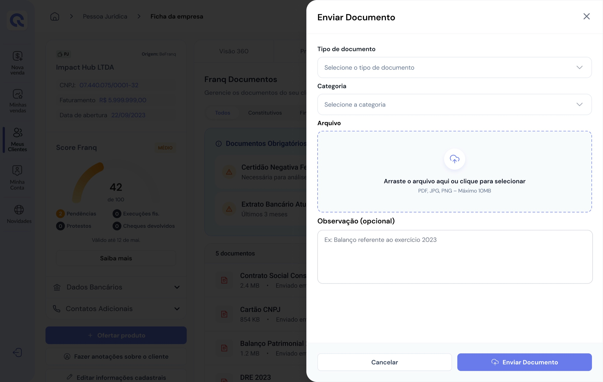
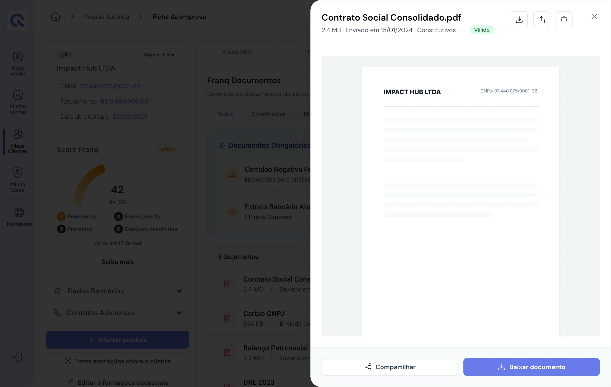
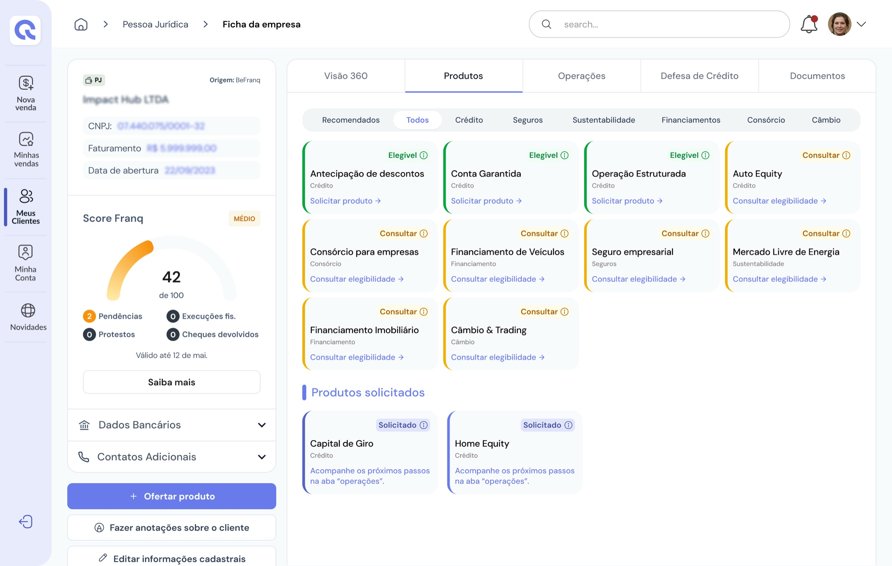
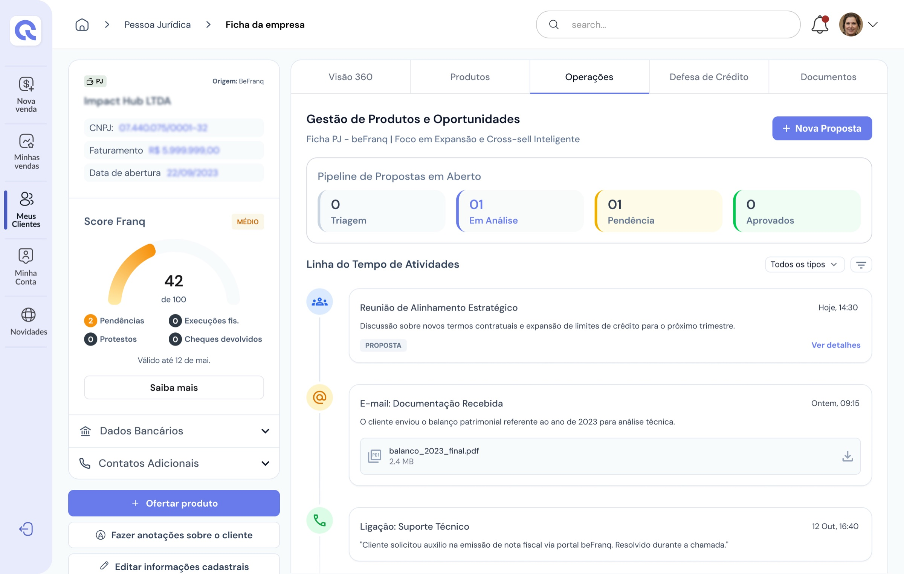
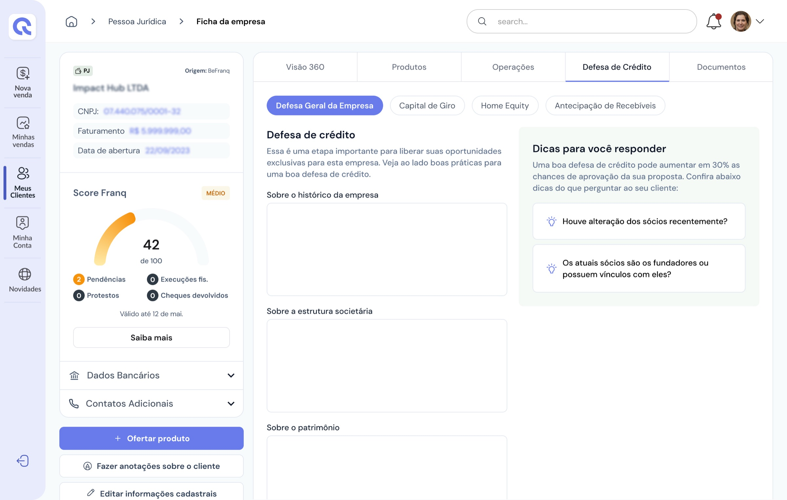
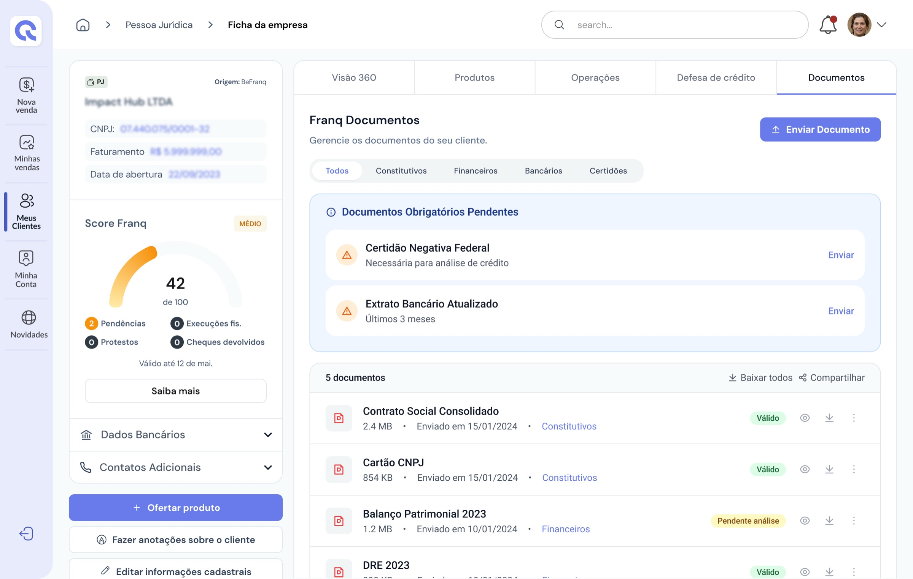

The PJ Client Profile is where the Personal Banker tracks score, documents and eligible products for each company. The old version crammed everything into three fixed columns: diagnosis, document list and offers, with no organization by context of use. This forced the PB to scroll the entire page to find a specific piece of information, and never made clear what was the priority at each stage of the client relationship.
The profile crammed diagnosis, documents and offers into three fixed columns, with no organization by context of use. PBs had to scroll the whole page to find information, and it was never clear what mattered most at each stage of the client relationship.
A profile organized into five tabs — Overview 360, Products, Operations, Credit Defense and Documents — each answering a PB question, with document upload and viewing in modals, without leaving the screen.
UX Designer, responsible for the survey with PBs and CSs, reorganizing the information architecture, prototyping every interface state and redesigning the document flows.
Design process
I started from how the profile was really used day to day, and only then moved to the screen. The work followed four phases: Discover, Define, Design and Deliver.
Discover: survey the most frequent tasks of PBs and CSs and where the old profile got in the way.
Survey with PBs and CSs / Old profile analysis
Define: turn tasks into questions, and questions into a tab structure.
PB questions / Information architecture
Design: prototype the tabs, every interface state and the modal document flows.
Empty, pending and success states / Modal flows
Deliver: final interface built on the Franq design system.
Final prototype
To understand how the profile was used day to day, I conducted a survey with PBs and CSs on their most frequently performed tasks. Based on these insights, I identified the need to reorganize the experience.
The old version crammed everything into three fixed columns: diagnosis, document list and offers, with no organization by context of use. Compare it with the new version:
The new profile came to be structured into five tabs, each answering a specific need of the PB: "How is this client doing today?", "What can I offer?", "What's already in progress?", "How do I increase approval chances?" and "Which documents have already been sent?".
“How is this client doing today?”
→ Overview 360
“What can I offer?”
→ Products
“What's already in progress?”
→ Operations
“How do I increase approval chances?”
→ Credit Defense
“Which documents have already been sent?”
→ Documents
The profile keeps a fixed side panel with company data and score, and organizes everything else into five tabs. The structure below was rebuilt from the final screens.
Information architecture · Business client profile
In the 360 Overview, critical information such as score, pending items and ownership structure gained greater prominence, allowing for a quick assessment of the client's situation. The new document upload and viewing flows significantly simplified the process of attaching and consulting files, making the experience more agile, intuitive and efficient.
Browse the tabs below. On the Documents tab, click “Send Document” to see the upload flow.
Beyond reorganizing the information, I prototyped every interface state, empty, pending and success, ensuring consistency across different usage scenarios. I also redesigned the document upload and viewing flows using modals, allowing the PB to attach and consult files without leaving the profile, preserving navigation context and reducing task interruptions.

Modal — document upload without leaving the profile

Modal — viewing and downloading the submitted document
The final interface was built on the Franq design system. All five tabs share the same side panel with company data and score, so the PB never loses the client’s context when switching tasks.

Products

Operations

Credit Defense

Documents
Measuring success
When information is scattered, the cost shows up as time: searching for data is one of the biggest drains on a knowledge worker’s week.
1.8 h/day
is the average time knowledge workers spend searching for and gathering information at work — almost one day a week.
McKinsey Global Institute · The social economy, 2012 ↗The indicators below translate the project goals into measurable signals, with how to measure each one.
Outcome
The tab restructuring brought immediate clarity on where to find each type of information, reducing the time PBs spend searching for scattered data and turning the profile into a true relationship-management panel for PJ clients.
5
Dedicated context tabs
-40%
Scrolling to find information
2
Modals for upload and viewing
Reorganizing the profile around the PB’s questions reinforced a few principles:
Next project
A New Experience for Commission Management